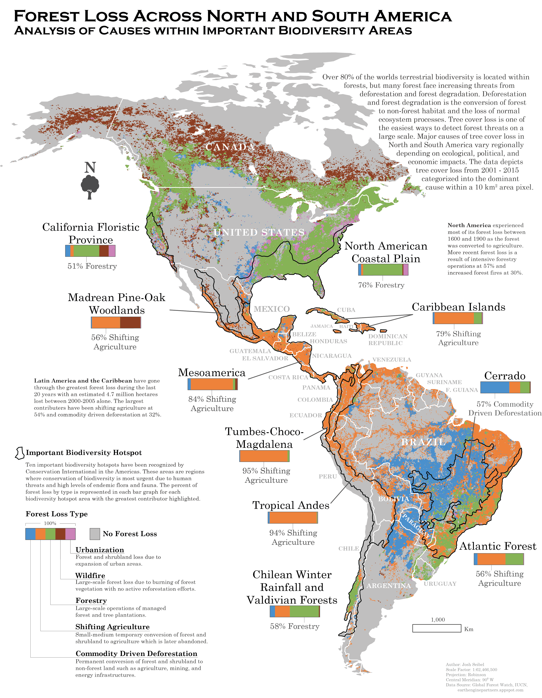

Forest Loss in the Americas
This map was made as part of Geography 370, Introduction to Cartography. For this task, we were given the opportunity to integrate our understanding of design, production, and critique with a mapping project of our choosing. Because of my strong interest in conservation, I wanted to take a broad look at some of the issues that have been causing forest loss across North and South America. Taking change in forest canopy satellite imagery data from a 15-year period and analyzing the main drivers of forest loss within world recognized important biodiversity areas, I was able to derive a rough look at some of the facters affecting these forests. Unfortunately, shifting agriculture appears to be the most common cause and is unlikely to change course in the coming years.
